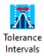
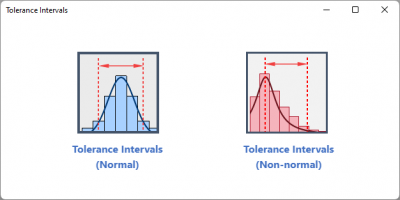
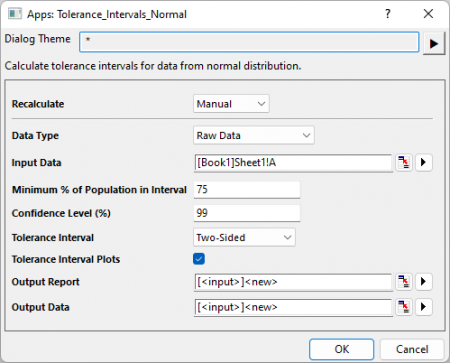
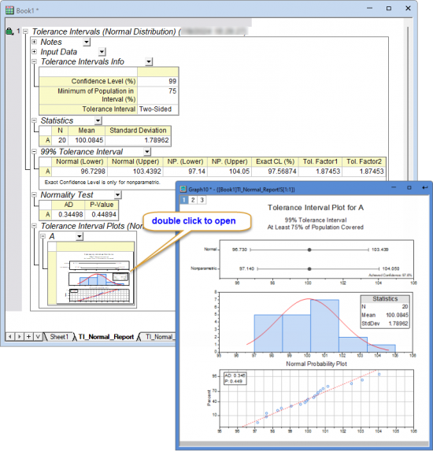

Tutorial for Tolerance Intervals
Tutorial-Tolerance-Intervals
Introduction
Tolerance intervals are used to quantify the range within which a certain percentage of a population is expected to fall. They are used to ensure that a product or process meets certain standards
The Tolerance Intervals app in Origin supports calculating tolerance intervals for data from normal or non-normal distribution.
How to install and use the app
- Click Add Apps button in Apps Gallery to open App Center, search Tolerance Intervals and install the app.
- With a worksheet active, click the Tolerance Intervals icon,

to open the toolbar

Tolerance Intervals (Normal)
Specify Input Data
-
- Select one or multiple columns, each column contains one sample data
-
- Specified the summary values for sample size, mean and standard deviation of the sample
Specify Options
- Minimum percentage of Population in Interval
- Specify the minimum percentage of the population that you want the tolerance interval to include. The default value is 95%
- Specify the confidence level for confidence intervals. The default value is 95%
- Decide the type of Tolerance Interval, it can be Two-sided, Lower Bound or Upper Bound
-
Specified whether the output the graphical report which includes
- Parametric and non-parametric tolerance interval plots
- Histogram with distribution curve
- Probability Plot
Tolerance Intervals(Non-normal)
Specify Input Data
- Select one or multiple columns, each column contains one sample data
- Select the distribution of your sample data
Specify Options
- Minimum percentage of Population in Interval
- Specify the minimum percentage of the population that you want the tolerance interval to include. The default value is 95%
- Specify the confidence level for confidence intervals. The default value is 95%
- Decide the type of Tolerance Interval, it can be Two-sided, Lower Bound or Upper Bound
-
Specified whether the output the graphical report which includes
- Parametric and non-parametric tolerance interval plots
- Histogram with distribution curve
- Probability Plot
Tutorial
- Copy data: 99.83 100.86 100.71 97.14 98.49 102.47 104.05 100.53 97.65 99.92 98.28 99.05 101.13 100.39 99.58 100.57 103.08 100.32 100.00 97.64
- Go to Origin, create a new Workbook, right-click in the first cell of Column A. Select Paste Transpose in the context menu
- Highlight column A and click Tolerance Intervals icon in the Apps Gallery.
- Select Tolerance Intervals (Normal) to open the dialog.
- In the opened dialog, Column A is automatically set as Input Data. Set Minimum % of Population in Interval to be 75, Confidence Level (%) to be 99. Keep all other settings as default and click the OK button.

- The report table and report data sheets will be generated
